Photo credits
Where the pictures come from.
Every picture on this site was generated for this demo. None of them shows Tessgate's work, because Tessgate does not exist, and none of them is a photograph of a real house, a real job or a real person.
| What it shows | Where it came from | Used for | |
|---|---|---|---|
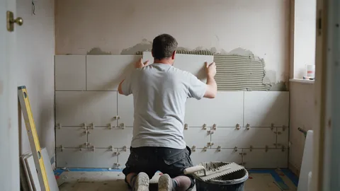 | A tiler fixing a large porcelain tile to a half tiled bathroom wall, used on the home page and the bathrooms page | Generated for this demo | Illustrative only |
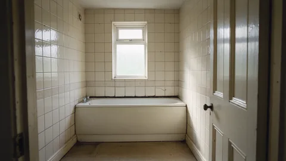 | The 'before' half of the slider: a tired dated bathroom with a border strip, discoloured grout and a dark gap along the bath | Generated for this demo | Illustrative only |
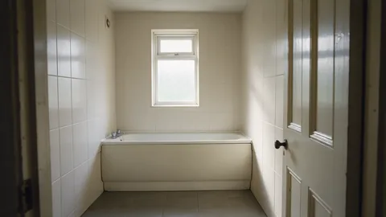 | The 'after' half of the slider, generated from the 'before' picture so it is the same bathroom from the same spot | Generated for this demo | Illustrative only |
 | A bathroom part way through having its walls and floor tiled, used on the bathrooms page and the work page | Generated for this demo | Illustrative only |
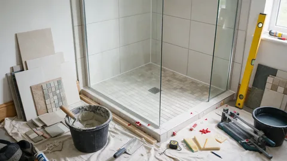 | A finished walk in shower with a mosaic floor, used on the bathrooms page, the regrouting page and the work page | Generated for this demo | Illustrative only |
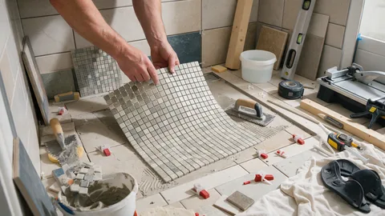 | A sheet of mosaic being bedded onto the sloping floor of a shower, used on the bathrooms page and the work page | Generated for this demo | Illustrative only |
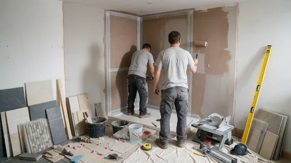 | A shower recess being waterproofed before any tiling, used on the bathrooms page and the work page | Generated for this demo | Illustrative only |
 | A kitchen splashback in a brick bond, used on the splashbacks page and the work page | Generated for this demo | Illustrative only |
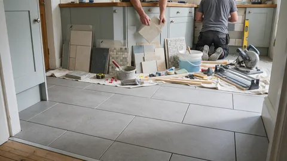 | A tiled kitchen floor with the cuts following the units, used on the splashbacks page, the large format page, the stone page and the work page | Generated for this demo | Illustrative only |
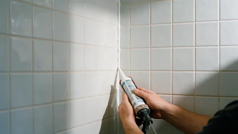 | A bead of sealant being run down an internal corner, used on the splashbacks page, the regrouting page and the work page | Generated for this demo | Illustrative only |
 | Two tilers lifting a large thin porcelain tile on a suction frame, used on the large format page, the work page and the large format article | Generated for this demo | Illustrative only |
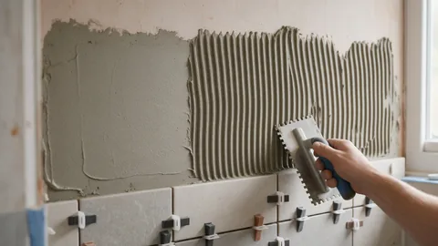 | A notched trowel combing adhesive out, with levelling clips in the joints below, used on the large format page, the outdoor page and the work page | Generated for this demo | Illustrative only |
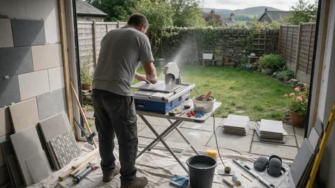 | A porcelain tile being cut on a wet saw outside the back door, used on the splashbacks page, the large format page, the outdoor page and the work page | Generated for this demo | Illustrative only |
 | A riven slate floor tile being lowered onto a combed bed in a hallway, used on the stone page and the work page | Generated for this demo | Illustrative only |
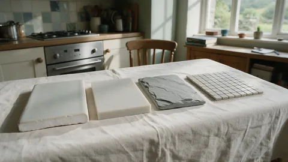 | Four tiles edge on, showing ceramic, porcelain, slate and mosaic, used on the services page, the stone page, the outdoor page and the work page | Generated for this demo | Illustrative only |
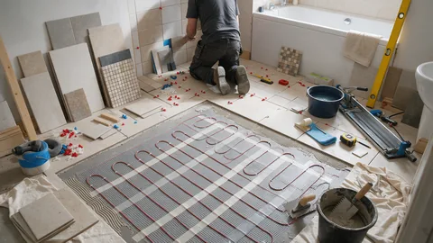 | A heating mat taped down over a decoupling membrane before a floor is tiled, used on the stone page and the work page | Generated for this demo | Illustrative only |
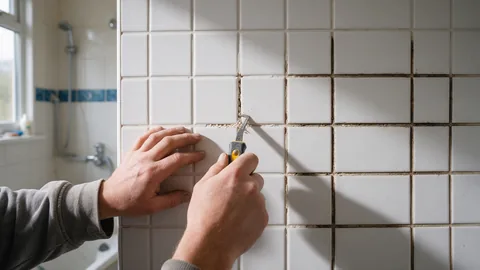 | Old grout being raked out of the joints between wall tiles, used on the regrouting page, the work page and the black grout article | Generated for this demo | Illustrative only |
 | A cracked and loose tile beside a shower tray with the grout gone round it, used on the regrouting page, the urgent help page and the tiling over tiles article | Generated for this demo | Illustrative only |
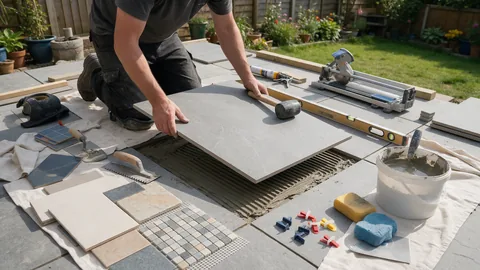 | An outdoor porcelain paving tile being laid on a full mortar bed, used on the outdoor page and the work page | Generated for this demo | Illustrative only |
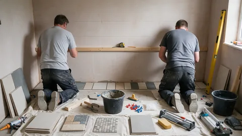 | A batten screwed to a chalk line with tiles dry laid along the floor, used on the area pages | Generated for this demo | Illustrative only |
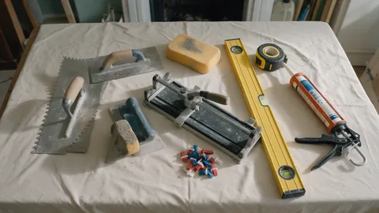 | A tiler's tools laid out on a dust sheet, used on the work page and the about page | Generated for this demo | Illustrative only |
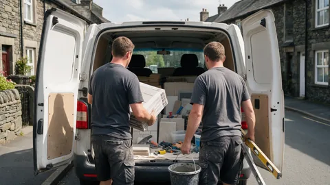 | Two tilers unloading boxed tiles from a plain van on a stone street, used on the about page | Generated for this demo | Illustrative only |
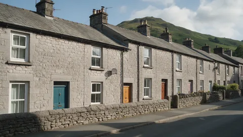 | A street of limestone terraced houses in a South Lakes town, used on the home, areas and area pages | Generated for this demo | Illustrative only |
The rest of it
Everything else on the page is drawn in the browser: the brand mark, the icons, the run of tiles under every heading with the cut tile left at the end, the two set out walls, the wall in section with the new tile over the old one, the grout joint in section, the internal corner grouted and sealed, the long tile bridging a hollow, the heated floor in section and the five stages from stripped to grouted. No stock photography, no clip art and no third party images.
Nobody in any picture is identifiable, and no tool, tub, bag, workwear or van carries a real name or logo. Every file is a WebP under 200 KB.
The before and after
The pair on the home page is the same bathroom twice. The 'after' picture was generated from the 'before' one, so the window, the bath and the door are in the same place in each. It is there to show the thing worth noticing about tiling, which is that the difference is in the joints, the corners and the line along the bath rather than in the colour of the tile.
The words
All the copy on this site was written for this demo. The firm, the people, the jobs and the reviews are invented. Anything factual, like why grout is porous or why a long tile lips on a wall that is not flat, is general trade knowledge rather than advice on your property. There are no prices, no guarantees, no schemes, no qualifications and no response times anywhere on it, on purpose.
The numbers
The firm's number, 01632 960612, comes from the range Ofcom keeps for television and film, so it rings nobody. The email address ends in .example, which cannot receive anything. The only real number anywhere on this site is Clockwork's own, 07460 038202, in the bar at the top and the note at the bottom, and it is labelled as Clockwork's rather than the firm's.
Want one like this for a real firm?
Ring Clockwork on the number in the bar at the top of the page. This demo is here to show what gets built, not to sell you a bathroom.